Detecting Tiny Performance Regressions at Hyperscale
This page was written by an AI model to give a high-level overview of the paper. Please check the paper for detail: ACM Digital Library.
At the scale of a hyperscaler, a performance regression that is too small to notice in a single test can still be expensive. Meta reports around 800 regressions a year on its serverless platform alone; roughly a tenth of them raise CPU usage by only 0.005% to 0.01%, yet left undetected they would collectively waste around 4,000 servers, and the median CPU regression across the whole platform is just 0.048%. This article (an invited, combined extension of two 2024 conference papers, ServiceLab from OSDI and FBDetect from SOSP) describes the two systems Meta built to catch regressions at this scale: ServiceLab, which tests code and configuration changes before they reach production, and FBDetect, which watches production itself as the last line of defense.
Classic approaches fall short in both settings. Pre-production A/B testing normally assumes near-identical machines and as many trials as needed, but a hyperscale private cloud hands out heterogeneous machines whose natural differences (CPU stepping, kernel version, uncore clock) can swamp a 0.01% signal, and maintaining a dedicated homogeneous test fleet at Meta's scale is operationally impractical. In production, FBDetect cannot choose machines or repeat an experiment, and generic change-point detection algorithms produce a 99.7% false positive rate in Meta's environment because transient events, server failures, maintenance, load spikes, canaries, rolling deploys, look exactly like regressions on a noisy time series.
Both systems attack the same underlying quantity: the paper shows that the smallest detectable regression scales with the square root of the variance divided by the number of samples. ServiceLab reduces variance by actively selecting, out of the cloud's heterogeneous machine pool, a subset that agrees on a handful of key factors (server type, CPU architecture, kernel version, datacenter region, CPU turbo state) so that its performance variance approaches that of running on a single machine, and then it chooses among several statistical tests per service to extract a signal. FBDetect cannot control machines or trial count, so instead it moves measurement from the whole service down to individual subroutines, where the same absolute regression is a much larger fraction of a much smaller baseline, and it adds a purpose-built "went-away detector" to filter the deceptive transient false positives that ordinary change-point detection cannot.
Mechanically, a developer's change moves through a standard review, commit, release-candidate and staged-deployment pipeline (Figure 2). ServiceLab intercepts it at the review, commit, deployment and configuration stages: it replays sampled production traffic against the new code on a matched set of cloud machines and runs an adaptively chosen statistical test over repeated trials. Anything that slips past deployment is watched by FBDetect, which periodically samples fleet-wide stack traces (via eBPF or language-runtime hooks, including the paper's new Python profiler PyPerf) to compute each subroutine's relative CPU share, then pushes that time series through a pipeline of change-point detection, transient-issue filtering, seasonality removal, deduplication, cost-shift filtering and root-cause analysis.
Both systems have run in production for over seven years. ServiceLab detects CPU regressions as small as 0.01% and currently tests about 1,000 services and ML models; for the FrontFaaS platform alone it reaches 79.4% precision, an estimated 0.014% false positive rate, and the true regressions it catches would otherwise have wasted over two million machines across five years. FBDetect detects regressions as small as 0.005%, cuts raw anomalies by three to four orders of magnitude before a developer ever sees them, and in a head-to-head test against Yahoo's EGADS reaches a 0.088% false positive rate with essentially no false negatives, a combination no single EGADS configuration achieves.
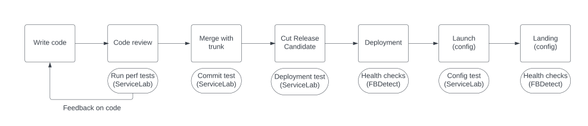
Key takeaways
- Fleet size turns tiny regressions into real cost: thousands of changes a year, many under 0.01%, which would otherwise accumulate into thousands to millions of wasted machines.
- ServiceLab prevents regressions pre-production with controlled A/B replay on matched heterogeneous cloud machines; FBDetect catches what slips through by monitoring production time series directly.
- Both reduce the same quantity, the variance that hides a small regression: ServiceLab by machine selection and model ensembling, FBDetect by moving from whole-service to subroutine-level measurement.
- FBDetect's hardest problem is not detecting a regression but filtering the deceptive false positives (refactoring cost shifts, transient production noise); its went-away detector removes 99.7% of raw change points.
- Both are mature, large-scale production systems (7+ years, hundreds of thousands of time series, ~1,000 ServiceLab use cases) now extended to ML training via a joint continuous-benchmarking pipeline.
From a noisy fleet to a 0.005% signal
The development workflow both systems plug into, why tiny regressions are hard to see, and how each system's machinery reduces variance enough to see them anyway.
1 · The development workflow both systems plug into
Meta stores all code in one monorepo. A developer clones it, makes a change (a "diff"), and submits it for review; both functional and performance tests run automatically on the diff. Once approved and committed, the continuous-deployment tool Conveyor periodically compiles a release candidate (RC) and compares it against the executable currently in production; a detected regression blocks the RC. A clean RC is deployed to production in stages, with health metrics, including performance, monitored continuously; a regression here triggers a revert. A common pattern, the gate, lets a developer ship code with a new path disabled by configuration, then flip a remote config flag later to activate it without a new code release (this matters for root-cause analysis later). ServiceLab covers the review-time, commit, deployment and config-test stages of this pipeline (Figure 2 in the Big Idea tab); FBDetect covers the continuous in-production health checks after deployment.
2 · Why a tiny regression is hard to see
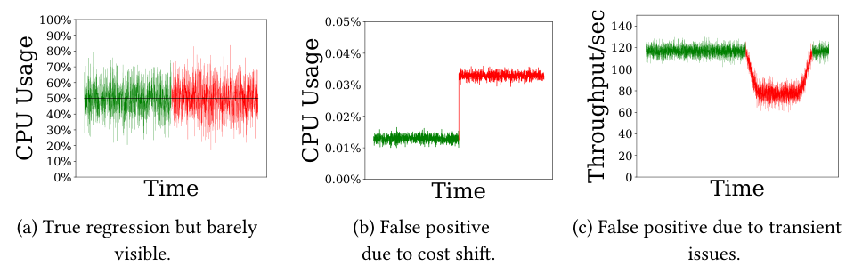
A 0.005% CPU regression is, by construction, nearly invisible in a raw time series: Figure 1(a) shows the mean barely shifting. Worse, the opposite also happens: Figure 1(b) shows a subroutine's CPU usage rising because a refactor moved code into it from elsewhere, not because total cost increased; Figure 1(c) shows throughput dropping for seconds to hours because of a transient production event (a failure, maintenance, a load spike, a canary test, a rolling update) that recovers on its own. Naively applying standard change-point detection in this environment produces a 99.7% false positive rate.
The paper formalizes the target with a simple relationship (derived from the Student's t-test; Appendix A.2): the smallest reliably detectable difference, Δthreshold, is proportional to the square root of the sample variance divided by the number of samples, n. There are exactly two levers: collect more samples, or reduce variance. A hyperscale fleet makes it easy to grow n (many servers, many requests), but it also has high variance from mixed server generations and diverse request types, so relying on fleet size alone would take weeks to years to reach a low threshold. ServiceLab and FBDetect both exist to attack the variance term directly, in two very different environments.
3 · Two environments, two sets of design choices
| Design choice | Traditional pre-production | ServiceLab | Phased deployment | FBDetect |
|---|---|---|---|---|
| Machines | Dedicated cluster | Private cloud | Production (subset) | Production |
| Workload | Synthetic benchmark | Record and replay | Production | Production |
| Dependent services | Set up own copy | Use production ones | Production | Production |
| Statistical method | A/B testing, repeated trials | A/B testing, repeated trials | Threshold on data points | Time-series analysis |
| Root-cause analysis | Unnecessary | Unnecessary | Unnecessary | Necessary |
4 · ServiceLab's experiment lifecycle
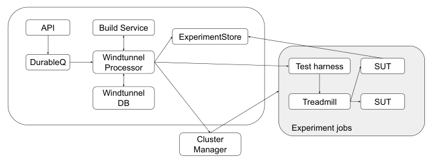
A ServiceLab experiment moves through queued → build → allocation → running → analysis. A request enters a durable queue and a Windtunnel-DB entry; one of several independent processors claims it, triggers a build (deduplicated by a caching build service), then allocates machines from the private cloud within the submitting team's quota, choosing a single datacenter region and filtering by server type, CPU architecture and kernel version to minimize variance (Section 5 below). Treadmill, an open-source load-testing tool extended by the authors, replays previously recorded Thrift RPC traffic at a fixed rate to both the A and B sides in a synchronized fashion; a test harness monitors health and can drive a capacity test by ramping load until an SLO breaks. After the run, the Experiment Store aggregates metrics and applies the chosen statistical test, writing results that can block a release.
5 · Selecting comparable machines out of a heterogeneous cloud
Physical machines are classified at three granularities: ServerType (tens of coarse categories, e.g., single-CPU general purpose), ServerSubType (hundreds, adding RAM size and CPU architecture), and ServerModel (10,000+, naming every component). Users can request a ServerType; ServiceLab additionally filters within that pool. Using ANOVA (a regression-style method for categorical factors) on 21.5 million generic-benchmark records and 186,000 real-application ServiceLab records, the authors find that ServerModel plus kernel version explain 89% of CPU-benchmark variance (an upper bound), while just three factors, ServerType, CPU architecture and kernel release, reach 87%. On real applications, two more factors matter: CPU turbo state and datacenter region (the latter because dependent production services vary by region), together adding up to 0.23 of R² where the generic benchmark barely moved (+0.01). Some CPU models and kernels are intrinsically noisier than others (coefficient of variation up to 42% for one CPU model, 52% for one kernel version), so ServiceLab avoids them. The payoff: machines matched on these factors show nearly the same variance (CoV) as repeated runs on a single machine (5.7% vs. 5.9% at the median; a larger gap, 38% vs. 28%, remains at the tail).
6 · Choosing and tuning the statistical test per service
A trial is one A/B comparison; an experiment is many trials; an A/A test compares two runs of identical code to estimate baseline noise. ServiceLab offers three test methods, a Student's t-test for single-trial experiments, a permutation test across trial means for multi-trial experiments, and a confidence-interval test that builds its null distribution from two weeks of historical A/A data (useful for noisy or non-continuous metrics), combined with optional preprocessing (a square-root transform to dampen heavy-tailed request costs, or winsorization to cap/drop outliers). Rather than pick one model globally, ServiceLab runs periodic A/A tests and synthetic A/B tests with injected regressions (via compiler-inserted delays or post-hoc data manipulation) to score every candidate model's false-positive rate, false-negative rate and detectability per
7 · Replaying realistic traffic without full isolation
Replicating every downstream dependency for a test is often uneconomical (a per-test copy of the social graph for billions of users, for instance), so ServiceLab instead lets the system under test call real downstream production services, since most such calls are read-only or idempotent and the added test load is negligible against production traffic. Calls that could have side effects are either dropped by default (writes to databases, caches and warehouses, via a client-library shim) or mocked by the service owner (e.g., redirected to a test database). Production traffic is recorded transparently at the Thrift RPC layer with configurable sampling (reservoir sampling for high-variance request rates; median sampling rate 0.03% fleet-wide) and replayed by Treadmill. Because testing every diff against every endpoint is wasteful, a component called DiffSuggester walks the compiler's abstract syntax tree to find functions a diff touches, scores the diff's likely cost impact using production profiling data, and uses the same data to pick which recorded endpoints to replay.
8 · FBDetect's measurement: subroutine-level gCPU and PyPerf
FBDetect's core metric, gCPU, is a subroutine's share of stack-trace samples (a subroutine appearing in 8 of 100 samples has gCPU 8%). If a process's CPU usage decomposes into k roughly independent subroutines, the variance of any one subroutine's measurement is about 1/k of the whole process's variance, so the same absolute regression is far easier to detect at subroutine granularity; in Meta's serverless platform the effective k is estimated at over 12,000 non-trivial subroutines. Collecting a program's stack trace is straightforward for compiled languages and for Java and PHP (which expose it natively), but sampling an interpreted Python program's native stack only yields the CPython interpreter's own call stack. The paper's PyPerf fixes this with an eBPF probe that walks CPython's virtual call stack (a linked list of frames with Python source addresses) and merges it with the native C/C++ stack, producing a precise end-to-end trace; at FBDetect's typical sampling rates the overhead is negligible, rising only at an extreme one-sample-per-server-per-second rate (about 0.8% throughput loss, up to 14% higher p99.9 latency at 2,000 samples/second).
9 · FBDetect's filtering and deduplication pipeline
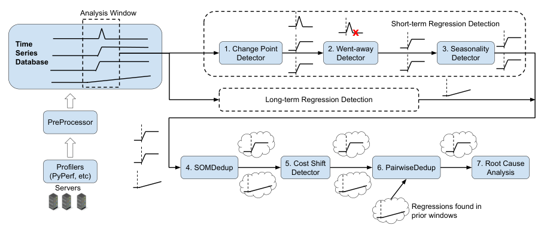
Each gCPU time series is periodically scanned for two kinds of regression, sudden and gradual, with separate algorithms:
- Change-point detector. Iterated CUSUM and Expectation-Maximization locate the most likely single change point, validated by a likelihood-ratio test at significance 0.01.
- Went-away detector. Filters transient false positives like Figure 1(c). It discretizes the series into letters via Symbolic Aggregate approXimation (SAX) and flags a true regression only if the post-change pattern is genuinely new, or if the regression is significant, shows a lasting upward Mann-Kendall trend, and has not since reverted; this combination survives cases, like a spike unrelated to a later real regression, that simpler heuristics got wrong.
- Seasonality detector. Runs Seasonal-Trend decomposition using Loess (STL) to strip daily/weekly patterns, then re-checks whether the regression survives in the residual plus trend, using both the analysis and extended windows.
- Long-term detector. A separate path for gradual drifts: STL decomposition, then a baseline-vs-current mean comparison on the trend component, then dynamic-programming change-point search if the drift is not linear.
- SOMDedup, then PairwiseDedup. A fast O(
n) Self-Organizing Map clustering pass merges regressions sharing features like candidate root causes and TF-IDF-encoded metric names within one analysis window; a slower, more accurate pairwise pass then merges remaining regressions across windows and metric types using time-series correlation, text similarity and stack-trace overlap. - Cost-shift detector. Checks a regression against a "cost domain" (upstream callers, enclosing class, a commit's touched subroutines, or custom groupings); if the domain's total cost barely moved, the regression is relabeled a refactor-induced cost shift rather than a real one.
- Root-cause analysis. Ranks candidate changes deployed just before the regression by subroutine-gCPU attribution, text similarity between the regression context and the change description, and time-series correlation. The gate mechanism (Section 1) complicates this, since a regression can be triggered by a config flip that touches no source code directly; FBDetect mitigates this by statically mapping common gate-check code patterns to the subroutines they guard.
Results of this pipeline, including how much each stage filters, are covered in the Evaluation tab.
10 · Extending both systems to ML training
ML training strains both systems differently. GPUs are scarce and expensive, so ServiceLab usually cannot afford multiple A/B trials for a training job. FBDetect's root-cause analysis relies on stack-trace hotspots, but many training regressions come from the PyTorch compiler choosing a different kernel, parallelization strategy, or taking longer to compile, none of which shows up as increased CPU/GPU usage in a user-written subroutine. The paper adds compiler-aware metrics (total and per-rank compile time, recompile counts, cache cold/warm starts, compiler-failure counts) and a joint pipeline: ServiceLab continuously runs benchmarks (the TorchBench suite, plus teams' own simplified models) and feeds the results to FBDetect as an ordinary time series; when FBDetect finds a regression it proposes a bounded list of suspected changes (typically 5,000 to 20,000 for a gradual drift) rather than attempting root-cause analysis itself, and ServiceLab resolves the exact culprit with a binary search using full multi-trial experiments only over that suspected subset.
Evaluation
Seven years of production data from both systems: machine-variance validation, catch rates, filtering effectiveness, and a head-to-head comparison against prior art.
Both systems are evaluated with production operational data rather than a single controlled benchmark. ServiceLab's evidence comes from its FrontFaaS deployment (5+ years) and an aggregate of 483 other use cases; FBDetect's evidence comes from fleet-wide monitoring of hundreds of services and about 800,000 time series, cross-checked against developer-confirmed incident tickets, an LLM-based auto-labeler, and a direct comparison against Yahoo's EGADS anomaly detector.
| What | Value in the paper |
|---|---|
| Platform | ServiceLab: Meta's private cloud, Linux containers (no VMs). FBDetect: Meta's production fleet, measured via eBPF/runtime stack-trace sampling into a time-series database |
| Workloads | FrontFaaS (PHP FaaS, 500K+ machines), plus Laser, MLPredictor, DataAggregator, XFinder, Ranker (ServiceLab); PythonFaaS, TAO, AdServing, Invoicer, Capacity Triage (FBDetect) |
| Baselines | Prior CloudLab machine-variance study (Maricq et al.); standard change-point detection; Yahoo's EGADS anomaly-detection algorithms |
| Metrics | Regression threshold (down to 0.01% for ServiceLab, 0.005% for FBDetect); precision/false-positive rate; false-negative rate; root-cause accuracy |
ServiceLab's true positives for FrontFaaS skew tiny, but add up to millions of machines
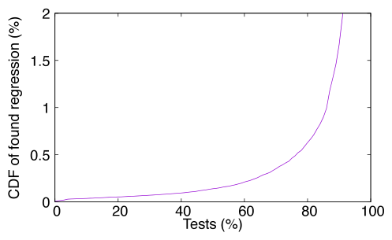
What it shows. The cumulative distribution of the regression magnitude of confirmed true-positive ServiceLab findings for FrontFaaS over five years. The median (p50) is 0.14%, p90 is 1.7%, and p99 is 38.7%. Summed together, all true positives account for 12,284% of regression over five years; restricting to regressions under 1% (excluding likely-experimental huge regressions) still sums to 545%, which the paper translates to over 2 million machines (545% of FrontFaaS's fleet size).
What to take from it. Even with a strict 0.01% threshold, most of the value ServiceLab captures comes from a long tail of small regressions rather than a few huge ones; ignoring small regressions would let them accumulate into a large steady drain on the fleet over time, which is the paper's stated justification for FrontFaaS's strict threshold.
ServiceLab runs at real production scale, continuously
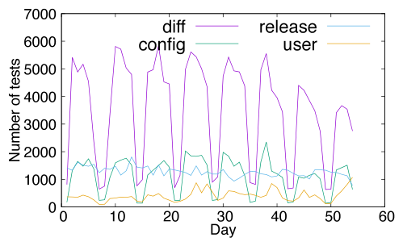
What it shows. The number of ServiceLab experiments completed per day for non-FrontFaaS services. The majority run automatically, triggered by code diffs (44% of 483 use cases), code commits (15%), configuration changes (21%), or service release processes (22%).
What to take from it. ServiceLab is not a periodic audit tool but a continuously running gate embedded in day-to-day development across hundreds of distinct services, which is what lets it test about 23% of FrontFaaS's 100,000+ monthly changes and still cover more than half of all code changes company-wide once DiffSuggester's filtering is accounted for.
Thresholds and trial counts vary enormously across use cases
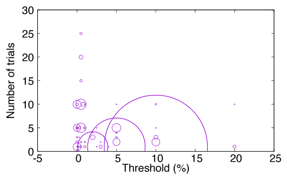
What it shows. A bubble plot of regression threshold versus number of trials for the 413 use cases with a defined relative threshold; circle size is the count of use cases sharing that setting. Most use cases cluster at a relaxed 5% or 10% threshold with only one trial (median threshold 5%, p90 10%, p99 20%), but a small subset, including many of the largest services, uses a much stricter threshold with up to 25 trials; 23% of use cases use a threshold below 1%.
What to take from it. ServiceLab is not tuned to one regression size; teams trade off trial count (cost) against detection threshold (sensitivity) based on how much capacity the service consumes, and the system supports both extremes simultaneously.
More trials narrow the confidence interval, letting teams size their own experiments
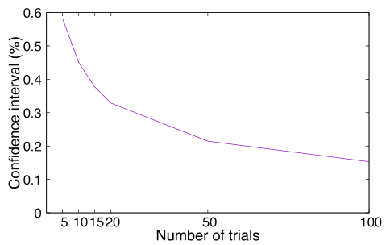
What it shows. For one service, repeated A/A trials are used to compute the pairwise difference ratio (A′−A)/A, and the 95% confidence interval (two standard deviations, assuming normality) is plotted as a function of the number of trials.
What to take from it. This is the practical tool teams use to choose their own trial count: run enough preliminary A/A trials to see where the confidence interval narrows to their desired detection threshold, then fix that trial count for ongoing testing, which is exactly how the diverse threshold/trial combinations in Result 3 get set.
FBDetect's filtering pipeline cuts raw anomalies by three to four orders of magnitude
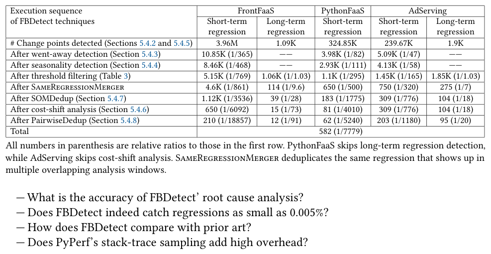
What it shows. For FrontFaaS, PythonFaaS and AdServing, the number of remaining anomalies after each successive filtering stage (went-away detection, seasonality detection, threshold filtering, same-regression merging, SOMDedup, cost-shift analysis, PairwiseDedup), starting from raw change-point counts. For FrontFaaS short-term detection, 3.96 million raw change points are filtered down to 210 (a 1/18,857 ratio); across all tracked workloads the went-away detector alone removes about 99.7% of candidates, the single largest filtering stage.
What to take from it. Detecting a candidate anomaly is the easy part; almost all of FBDetect's engineering effort, and its practical value to developers, is in deciding which anomalies are not worth reporting. Short-term (sudden) regressions are far noisier than long-term (gradual) ones and need more aggressive filtering, which is why the pipeline is ordered from fast, coarse filters to slow, precise ones.
Reported regressions span from 0.005% up to 15%, confirming tiny ones are really caught
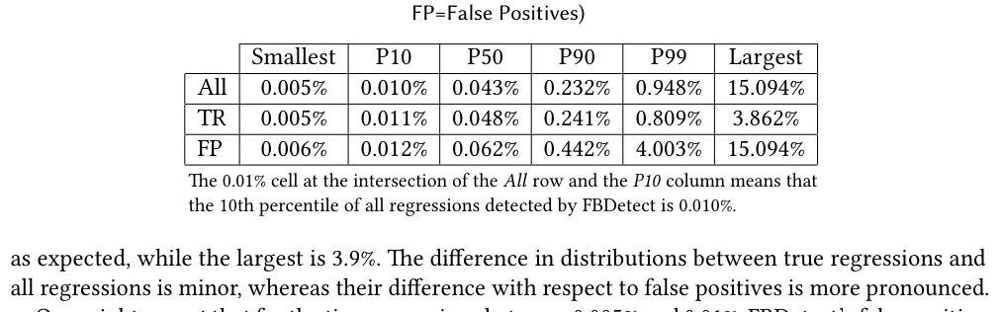
What it shows. The distribution (smallest, P10, P50, P90, P99, largest) of regression magnitude for all reported regressions, confirmed true regressions, and confirmed false positives. The smallest reported and smallest true regression are both 0.005%; the true-regression median is 0.048% and largest is 3.862%; the largest reported regression overall, 15.094%, is a false positive.
What to take from it. The false-positive rate does not spike for the tiniest regressions (the P10 values for all three categories are nearly identical), so FBDetect's sensitivity at the 0.005% floor is not bought with extra noise at that end; instead, the largest false positives (mostly cost shifts, per Section 5.5.2 of the paper) sit at the high end of the magnitude range.
FBDetect beats Yahoo's EGADS on the false-positive/false-negative tradeoff
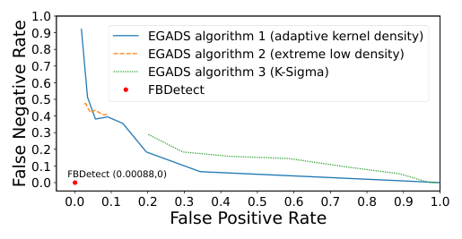
What it shows. False-positive rate versus false-negative rate for FBDetect and three tunable EGADS algorithms (adaptive kernel density, extreme low density, K-Sigma) on a test set of 107 time series with FBDetect-reported regressions (76 confirmed true positives after manual review) plus about 35,000 time series with no reported regression. FBDetect sits at (0.00088, 0): a 0.088% false-positive rate with essentially zero false negatives. Tuned to a comparably low false-positive rate (below about 0.02, the point past which 90%+ of developer investigations would be futile), only one EGADS variant qualifies, and it misses 84% of true regressions.
What to take from it. The EGADS algorithms can be tuned toward low false positives or low false negatives, but not both at once, because they lack a mechanism like the went-away detector to separate persistent regressions from recoverable transient noise. FBDetect's advantage comes specifically from that mechanism, not from a fundamentally different detection statistic.
FAQ
Q·What's the difference between ServiceLab and FBDetect in one sentence?▾
ServiceLab is pre-production: it A/B tests a code or config change on reserved private-cloud machines before it ships. FBDetect is in-production: it watches live service metrics continuously after a change has already shipped, as the last line of defense.
Q·Why does a 0.005% regression matter at all?▾
Because of fleet size. Meta's serverless platform alone sees around 800 regressions a year, and the ones in the 0.005%-0.01% range, about a tenth of the total, would collectively waste roughly 4,000 servers if left uncaught. Multiplied across hundreds of services and a million-server fleet, ignoring "tiny" regressions is not actually cheap.
Q·How can you detect something that small amid all the noise?▾
The paper's model says the smallest detectable difference shrinks with the square root of (variance divided by sample count). You can grow the sample count, which a hyperscale fleet makes easy, but that alone would take weeks to years without also cutting variance. Both systems exist specifically to cut variance: ServiceLab by picking comparable machines, FBDetect by measuring at the subroutine level instead of the whole service.
Q·Why not just throw more machines at the problem?▾
The paper shows total fleet-wide resource waste from undetectable regressions grows with the square root of fleet size even as the waste fraction shrinks (Appendix A.4), so variance reduction, not just sample count, is necessary to keep waste in check as the fleet keeps growing.
Q·What is "gCPU" and why measure at the subroutine level?▾
gCPU is a subroutine's share of CPU usage, estimated from the fraction of fleet-wide stack-trace samples in which it appears. If a 0.005% service-wide regression originates in a subroutine that only consumes 0.1% of total CPU, that is a 5% relative change at the subroutine level, far easier to detect statistically than the same change diluted across the whole process.
Q·How does ServiceLab pick machines when the cloud is heterogeneous?▾
It provisions a batch of machines from the private cloud, keeps only those matching on a handful of factors (ServerType, CPU architecture, kernel version, datacenter region, with CPU turbo disabled), and returns the rest. An ANOVA study on millions of records found these few factors explain nearly as much performance variance (87%) as using every available hardware detail (89%), so filtering on them makes dissimilar cloud machines behave almost like one machine run repeatedly.
Q·What is the "went-away detector" and why is it needed?▾
It is FBDetect's mechanism for telling a real, persistent regression apart from a transient blip (a server failure, a maintenance window, a load spike) that recovers on its own. Plain change-point detection cannot distinguish these without either a long wait or a large threshold that would miss small real regressions; the went-away detector uses pattern comparison (via SAX discretization) and trend tests to filter out 99.7% of raw candidate anomalies.
Q·How does FBDetect avoid flooding developers with false positives from code refactors?▾
With a cost-shift detector. If a subroutine's CPU usage rises only because code moved into it from elsewhere (its "cost domain", e.g. its class or its callers, shows no real increase), FBDetect relabels the finding as a cost shift rather than a regression. The paper reports 34% of raw subroutine-level regressions are cost shifts, and cost shifts remain the largest single source of FBDetect's remaining false positives.
Q·How does FBDetect find the root cause among thousands of concurrent changes?▾
It ranks candidate changes deployed just before the regression by three signals: how much of the regressed subroutine's cost change can be attributed to the candidate's modified functions, text similarity between the regression's context and the change's description, and correlation between the change's timing and the regression's time series. Measured on FrontFaaS, it suggests a correct root cause for about 35% of reported regressions, rising to roughly 78% if cases without a clear single root cause (new feature launches, production failures, changes outside its tracking) are excluded.
Q·Why doesn't ServiceLab just test every code change?▾
Cost. For FrontFaaS, developers submit over 100,000 changes a month; running a full multi-trial experiment on each would need far more test machines than are economical. DiffSuggester estimates each diff's likely performance impact from production profiling data and only triggers a test above a capacity-calibrated threshold, which is why ServiceLab tests about 23% of FrontFaaS changes yet still catches the regressions that matter.
Q·What is the "gate" mechanism and why does it complicate root-cause analysis?▾
A gate lets a developer deploy new code with a feature disabled by a remote configuration flag, then activate it later by flipping the flag, without a new code release (useful for instant rollback). When a gate flip causes a regression, there is no corresponding code diff to analyze, so FBDetect has to separately map configuration-flag names to the subroutines that check them.
Q·How does the combined pipeline work for ML training regressions?▾
ServiceLab continuously runs benchmarks (such as TorchBench) across versions of models, PyTorch and configurations, feeding results to FBDetect as an ordinary time series. When FBDetect spots a regression, instead of trying to pinpoint the exact cause itself, which is hard for compiler-level changes, it proposes a bounded list of suspected changes, and ServiceLab performs a rigorous multi-trial binary search over just that subset to confirm the true cause.
Q·Is FBDetect's approach just change-point detection with extra steps?▾
Change-point detection is only the first of seven pipeline stages, and on its own it is far too noisy to use (99.7% false positives in Meta's environment). The paper's comparison against Yahoo's EGADS, which offers several change-point-style detectors, shows none of EGADS's variants can simultaneously achieve FBDetect's low false-positive rate (0.088%) and near-zero false-negative rate; FBDetect's added stages (went-away detection, seasonality removal, deduplication, cost-shift filtering) are what make the difference.